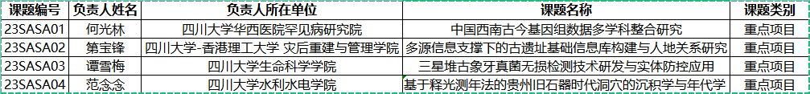

学院通知 · 教学通知
关于2023年四川大学考古科学中心开放课题 重点项目和一般项目立项的公示
发布时间：2023-09-12
根据《四川大学考古科学中心开放课题申请指南》有关规定，现将四川大学考古科学中心开放课题重点项目（ 4项）和一般项目（7项）立项名单予以公示。公示时间为2023年9月12日至17日。公示期内，如有异议，请向我中心实名反映，并提供必要的证明材料，以便核实查证。提出异议者须提供本人真实姓名、工作单位、联系电话等有效联系方式（中心将予以严格保密），凡匿名、冒名或超出期限的异议不予受理。 电 话： 028-85412314 邮 箱： scdxkgkxzx@163.com 通讯地址：四川大学考古科学中心办公室（四川省成都市望江路 29号四川大学文科楼406） 邮 编： 610045 联 系 人：张老师（ 13168048155） 1.四川大学考古科学中心开放课题重点项目立项名单 2. 四川大学考古科学中心开放课题一般项目立项名单 四川大学考古科学中心 2023年9月12日
